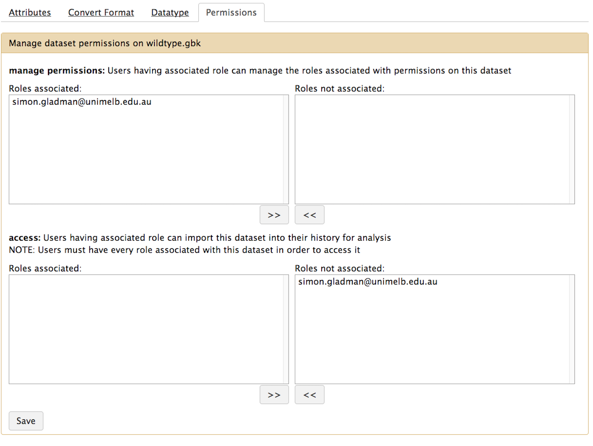

User, Group and Quota managment
Contributors
 Nate Coraor
Nate Coraor  Björn Grüning
Björn Grüning  Helena Rasche
Helena Rasche
Questions
How does Galaxy manage users and groups?
How can I assign Quotas to specific users/groups?
Objectives
Learn the Galaxy user/group management and assign Quotas.
Understand the Role Based Access Control (RBAC) of Galaxy.
Users, Groups, and Quotas
Speaker Notes
Users, Groups, and Quotas
Overview
This section will cover handling of users, groups and quotas for Galaxy. We will look at the following in particular:
- User Activation and Control
- User Passwords and Session Policies
- Setting Admin users and admin control of users
- User Privacy
- Roles and Groups
- Setting permissions on Libraries and Datasets
- Quotas
- Introduction to alternate authentication
Speaker Notes
- There are a large number of topics related to users, groups and quotas
- As an admin you have lots of control over this
- Most of the configuration lives in the galaxy.yaml file
- Some of the configuration must be done in the UI
User Control
| option | description |
|---|---|
require_login |
Prevent anonymous access. |
show_welcome_with_login |
Show welcome page next to login page. |
allow_user_creation |
Allow user registration. When False, admins must create users; often coupled with require_login. |
allow_user_dataset_purge |
Users can purge (permanently delete) their datasets. |
api_allow_run_as |
List of email addresses of API users who can make calls on behalf of other users. |
expose_dataset_path |
Users to see the full path of datasets via the “View Details” option in the history. |
.footnote[.center[options in galaxy.yml]]
Speaker Notes
- These options let you control user login.
- For example, are anonymous users permitted?
- Are users able to register themselves?
- Are users able to purge datasets themselves?
- All of these are questions you will need to consider.
User Activation
Require verification that a user’s email is real. You must enable SMTP first.
| option | description |
|---|---|
user_activation_on |
Require users to click link in email before running jobs. |
activation_grace_period |
Time (hours) that a user can ‘explore’ Galaxy before activation lockout. |
inactivity_box_content |
Message provided to non-activated users. |
email_domain_blocklist_file |
Defines domains in XXX.YYY format that will be rejected as user emails. |
.footnote[.center[options in galaxy.yml]]
Speaker Notes
- Whenever a user registers, user activation settings control how this process happens
- If you want to require activation they cannot run tools until they receive the confirmation email
- If you want to prevent users registering from specific domains
Password & Session Policies
| option | description |
|---|---|
password_expiration_period |
Days before requiring a user to change password. (NIST recommends not requiring password changes.) |
session_duration |
Minutes before invaliding a user’s session, requiring re-login. |
.footnote[.center[options in galaxy.yml]]
Speaker Notes
- Some options are related to IT security policies
- Check with your local IT authority for best practices for your organisation
Admin Control
| option | description |
|---|---|
admin_users |
Comma-separated list of admin users’ emails. |
allow_user_deletion |
Admins can delete users. |
allow_user_impersonation |
Admins can become other users. Great for debugging / user assistance. |
master_api_key |
Admin super-key allows many API admin actions without having a real admin user. |
.footnote[.center[options in galaxy.yml]]
Speaker Notes
- In the ansible galaxy training, you set the admin_users variable to define an admin email
- User impersonation is a very commonly used feature
- It allows admins to debug issues in their users’ histories
- A master api key cannot be used for every task an admin API key can be used for
- This is because it is not tied to an individual user
User Privacy
| option | description |
|---|---|
expose_user_name |
Users can view other registered usernames. |
expose_user_email |
Users can view other registered emails. |
new_user_dataset_access_role_default_private |
Newly created datasets are private to the creating user. |
.footnote[.center[options in galaxy.yml]]
Speaker Notes
- These options control if the username or email are shown as a dropdown in the sharing menus
- The option “new user dataset access role default private” is important
- By default when users share by link, all datasets are public
- When you set this option, datasets are private, even though the history is shared via link
- Users will complain when it doesn’t work, and have to be educated to click the appropriate buttons
Roles and Groups
Role Based Access Control (RBAC)
Admin can:
- create roles (each user automatically has their own ‘private’ role)
- create groups
- assign roles to groups
- assign users to groups
- assign groups to roles
- assign users to roles
- assign permission sets to roles
- assign permission sets to groups
Speaker Notes
- Galaxy uses RBAC for permissions in many places
- Roles can be created, and assigned permissions
- Roles and groups behave similarly, grouping users together and granting permisisons
Dataset Roles
.left-column50[ manage permissions
- Users who have associated role on a dataset can manage the roles associated it.
access
- Users having associated role can use/view/download a dataset for analysis. Users must have every role associated with a dataset in order to access it
new_user_dataset_access_role_default_private (galaxy.yml)
- When this is set, datasets are private by default. ]
.right-column50[.middle[.image-90[  ]]]
Speaker Notes
- The manage permission controls which accounts can manage permissions of datasets
- Access permission is those who can see and work with the data
- These can be controlled in the permissions menu of datasets
- Or more generally at the history level
- Users must have every role listed in order to access that dataset
- This leads to the odd case where users wish to share with multiple groups
- But by adding more roles, it becomes unavailable to everyone
Library Roles
.left-column50[
- access library: Restrict access to this library to only users having associated role
- manage library permissions: Users having associated role can manage roles associated with permissions on this library item
- add library item: Users having associated role can add library items to this library item
- modify library item: Users having associated role can modify this library item
]
.left-column50[.image-90[
 ]]
]]
Speaker Notes
- Access library permits users with any of the listed roles to access the library
- No roles means a public library
- Generally the last three are set to the same values, unless you have complicated requirements
- In the library management, someone with any subset of the roles listed may make changes
- This is very different from dataset permission management, where users must have every role
Quotas
Used to control user disk usage.
| option | description |
|---|---|
enable_quotas |
Enable enforcement of quotas. Quotas can be set from the Admin interface (under Data). |
Must create quotas in admin interface before any quota will be enforced, otherwise ‘unlimited’
Amounts:
- Examples: “10000MB”, “99 gb”, “0.2T”, “unlimited”
- = / + / -
Default for user class:
- None (No)
- Unregistered Users
- Registered Users
or associated with Groups or Users
.footnote[.center[options in galaxy.yml]]
Speaker Notes
- You can enable quotas in your galaxy.yml file
- When the user has more data than their quotum permits, they are prevented from starting new jobs.
- many sites setup a “quote increase request” form, to let users request increases for specific, temporary projects
class: left
Quota Details
- Quotas can be set for Users, or all users of a Group
- But it is not a “group quota”
- The quota is applied to individual users
Storage
- Quotas are stored in the DB tables
galaxy_user,galaxy_group, andquota
Speaker Notes
- Quotas can be set for Users or Groups
- But it is applied individually, as users may receive multiple quota changes
- E.g. a user working for two groups, might receive two different quota increases
Quota Automation
- There is currently no quota automation.
- Some individuals have written their own quota automation but it is quite ugly (usegalaxy-eu/quota-sync)
- Could be nicer with a lot of work
- Quotas are like group/user management: not managed by files, only within UI/API
Speaker Notes
- Quotas can be managed through the API
- Some people want to automate this process, but it needs more work.
Key Points
- Galaxy has a powerful user and group managment system that can be utilized for Quota management.
Thank you!
This material is the result of a collaborative work. Thanks to the Galaxy Training Network and all the contributors! This material is licensed under the Creative Commons Attribution 4.0 International License.
This material is licensed under the Creative Commons Attribution 4.0 International License.